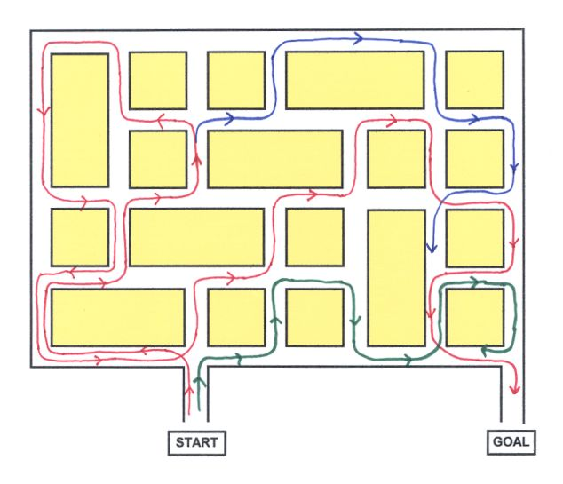

What Logic Is Not
|
During High School, at St. Louis Country Day, I was fascinated by plane geometry. For homework, we were usually given a postulate and then asked to prove it using the axioms of the system. That was really fun homework. It’s like every day they were giving me a new puzzle to solve. I did, however, have a lot of questions, chief among them was: what exactly is an axiom and how does it differ from a postulate or a theorem. I was told something like: Well, axioms are really, really true and they are used to derive the rest of the system. My teacher did tell me about non-Euclidean geometry, which took the parallel-lines axiom, changed it to assume that parallel lines did meet, and thereby created an entirely new geometry (which, incidentally, had some application with sub-atomic particles). This all amazed me and I asked how they could change that particular axiom. The best answer I got was that the parallel lines axiom was just really true, it wasn’t really, really true. But, I asked, what if you changed one of the other axioms, would you get yet another geometry. And how many geometries can there by anyhow. So far, no answers to any of these questions. I went to college at Yale and took a course in symbolic logic taught by Carl Hempel. We studied the Russel-Whitehead Propositional Calculus which uses different symbols for or, and, exclusive-or, if, etc. It’s sort of like English but it is rigorous. I also learned something about Polish Logic, which, surprisingly, helps explain how a push-down stack works in computer programming. We also knew about the old syllogistic logic used by the Greeks. Of course, I had to ask just how many logics can there be, and I got no answer for this. After leaving college, I pretty much forgot these questions until forty years later when I stumbled on something that seemed to answer everything for me. |
|
 This particular maze has the rule that at each intersection you have to turn left or right, you can’t go straight. As a help in designing these mazes, I usually come up with theories (or theorems) about what is going on in the maze. In this particular maze, I saw that something was happening with parity. If you traveled in one direction down one of the short blocks, then you traveled around other short blocks and came back to the original block, you will be going in the same direction. I don’t need rigorous proof for these theorems—“Something is happening with parity” is good enough. That theorem provided a good way to keep false paths out of the goal. The green false path here illustrates this. My second theorem is that if you travel down a long block, you effect a change in parity. One thing I like to do in my mazes is get paths to double back on themselves. I could do this if, and only if, I effected a change in parity. The red line in this diagram shows the true path to the goal. It goes down three long blocks, thus making three changes in parity. By the way, the blue line shows an interesting false path. It starts with the correct parity to reach the goal, but I force it down a long block to change its parity and keep it out of the goal. So, my big epiphany is this: When I design these mazes, I usually have different sets of rules for different mazes. And from each set of rules, I derive various guidelines. I realized that each set of rules is like any closed logic system. My rules are the axioms, and they are axioms not because they are really, really true; they are axioms because I say they are. My guidelines are theorems I derived from my axioms. Similarly, the axioms in the Russell-Whitehead Propositional Calculus are axioms because Russell and Whitehead say they are. These closed logic systems have been very helpful to me in designing mazes. I would think they would be helpful in designing any sort of puzzle, and they would also be helpful in solving puzzles. I would also think a closed logic system would be useful in other areas, though I haven’t been able to come up with an example. But at least I’ve answered my question about how many of these systems can there be, and the answer is obviously an infinite number. I’d like to close by saying a couple more things about the Russell-Whitehead system. We all know that symbolic logic is a closed abstract system that does not say anything directly about logical thinking. The question, though, is how useful is the system. I’d be inclined to say it is not very useful. The system has had a couple of failures. They tried and failed to extend the system to provide a basis for mathematics. Gödel’s Theorem is related to this failed attempt. They also tried to extend the system to include inductive as well as deductive logic, and all they got here were some amusing paradoxes. There is really no way to codify inductive logic. The only way to study it is to play games of Eleusis. The Russell-Whitehead system has, however, had one great success, and it happened many years after the system was developed. Every high-level computer language today uses the words if, or, exclusive or, etc., or it uses symbols for those words. It uses these words and symbols in exactly the same way that the Russell-Whitehead system used their symbols. This is an important accomplishment. If you learned what if meant in one computer language, then you learned another language and if meant something different, you would have a pretty hard time. * * * * * * * * * * * * * * My lecture went over fairly well—at least no one told me it was completely stupid. A couple of people said that they too had been frustrated that they could never get a good explanation of axioms. I’d like to hear from others, especially those who know more about this subject. * * * * * * * * * * * * * * Comments received:I sent an e-mail to Douglas Hofstadter asking, essentially, whether this lecture was accurate or nuts, and in less than an hour I got this response. Douglas Hofstadter Hi, and thanks for your note. I think what you said is pretty accurate and certainly not in the least nutty. However, just to be nitpicky, let me mention that no one proves (or asks anyone else to prove) POSTULATES -- it is THEOREMS that are proven. But terminology aside, your ideas about the logical system of Russell and Whitehead are (sort of) on the mark. There are certainly an infinite number of logics, and an infinite number of geometries as well. (Incidentally, you might enjoy the wonderful book “A Geometrical Picture Book” by Burkard Polster, published by Springer Verlag. It is chock full of wonderful pictures of hundreds of different finite geometries.) Where I think you go somewhat wrong (but are not at all nutty) is in thinking that any set of axioms at all might be chosen. Yes, in principle, but not in practice. The reason a mathematician or logician chooses a certain set of axioms is that those axioms seem to capture a piece of reality pretty (or very) accurately. But then, after you’ve explored the consequences of your axioms (i.e., you’ve explored a good deal of the space of theorems, and seen the kinds of things that are provable in it), you may want to explore an alternative version. Thus mathematicians worked with real numbers for millennia before somebody said, “Well, what if we decide that x-squared doesn’t always have to be positive for every x except zero? What if we throw in a number whose square is minus one?” Thus was born the study of the complex numbers -- one of the deepest, richest branches in all of mathematics, and on which all of modern physics (quantum mechanics) depends. Similarly, one day some bold mathematicians asked themselves, “What if we explored the consequences of thinking that space has four dimensions, instead of three (or two or one)?”, and thus was born 4-D (and then N-dimensional) geometry. Later came infinite-dimensional geometry (all of these are important in physics). But all these abstract ideas were explored because they seemed to correspond to some aspect of reality. So far no one has found it useful to explore the consequences of positing that zero equals one, for instance. People write down axioms (and study those axioms’ consequences) because the axioms seem to capture (correspond to) some aspect of reality. I hope this quick answer helps you to understand how I see your discovery about infinitely many geometries and logics. All the best -- Doug Hofstadter. Okay, but forget mathematicians and logicians. My main assertion was that the following can be an axiom: At each intersection in the maze, turn left or right. Furthermore, that axiom can create a useful axiom-theorem system. If that is true, then there really is an infinite number of these systems. Maybe I should have called them “axiom-theorem systems” instead of “logic systems.” Robert Ellis The following sentence pretty well sums it up:
And the reason people say certain things are true is not because they are necessarily true, but because it is useful to think of them as true. Our geometry teachers all did us a disservice by telling us that “parallel lines never meet” was an axiom because it was so obviously true — maybe they felt our young minds couldn’t handle the alternative (it’s true because it’s useful). If you really want to think some more about it you have to ask what would happen if you came up with some different definition of parallel! Of course what appears to be obviously true in plane geometry is not true in solid (3D) geometry or geometry on the surface of a sphere or on one of those things that doubles back on itself. Spherical geometry is really hard to get your head around (think about a triangle on the surface of a sphere). On a somewhat related subject, another interesting thing I learned in math when studying different coordinate systems (rectangular, cylindrical and spherical) was how a problem that was trivial in one system was practically unsolvable (to coin a word) in another. Talk about changing definitions! Your sentence:
should be expanded to say that’s how computer hardware is defined. In the old days there was an east coast computer design methodology that used logic schematics and a west coast methodology that used just logic equations. I never used the west coast methodology but it seemed very awkward to me. On the other hand, it was easier to computerize. Bob Ellis is one of the early designers involved with computers, and his last paragraph is intriguing. I wish I knew more about that subject. Jorge Best April 17, 2006 Hello Bob, I liked your article very much. As all of your writings, to me it is not only of intrinsic value for its content, but also written in that personal style of yours which lets us peek into your thoughts and experiences. Since I have also spent so much time designing mazes, of different kinds, I share your insight into the intuitive ways to somehow come up with rules or constraints that guide the design process. Of course, this is even more evident for the Logic Mazes you create, because of their very unique rules. In a way, the mazes with rules create a different “universe,” in which the normal ways for moving in space do not always hold true. In this sense, I believe your thoughts about how all this relates to Euclid’s postulates and geometry are very much in the mark. Now, as Doug Hofstadter point out in his comments, another matter is to see whether or not any system of axioms has an approximate correspondence with “the Real World.” I believe it is possible that at least some of the mazes or maze rules you create will prove to be a good way to model some “application domain” and therefore be of practical use. I also enjoyed solving the Twisty Maze. I probably spent about 10 minutes solving it. At first tried a few paths at random, noticing that even though they lead you very close to the Goal, they do it in such a way that you are forced to turn away from it. I then tried going backwards from the Goal, to have a sense of how you could get there... and then realized that the important thing was to find a way to get to any of the intersections that are close to the exit but “in a different way” than the random paths I had already tried. Specifically, I wanted to find a way to get to the (3,5) intersection (assuming the bottom-left corner is the origin (0,0)), through an East-West path, and not through a North-South path. The above led to the recognition that some kind of “parity change” was required, and then by chance I found that if the entrance to the maze was one block above the actual entrance, then from there I could get to the Goal with no problem. Finally, I looked for a way through the left portions of the maze that would allow me to go back to the beginning with the appropriate “parity.” Overall, a very enjoyable maze. Thanks! Cromwell Enage Hello, I’ve skimmed your essay several times but only recently finished mentally digesting it. Now, in an attempt to help you out, I’ll introduce another variable into the equation: perception. Each of the definitions of ‘axiom’ as provided by Wiktionary are stated in terms of a perception. A philosopher regards an ‘axiom’ as “a most self-evident truth”; no other explanation can make it obvious. A mathematician must “assume” that an axiom is true within a mathematical system because a corresponding falsehood will bring that system down. Everyone else simply “receives” an axiom and takes it for granted. But as we develop, hone, and otherwise change our own perceptions, we find that certain ‘axioms’ no longer apply. For example, the rules of Newtonian physics are still valid for those of us who remain Earthbound, but Einstein’s Theory of Relativity kicks in with a vengeance the moment we experience speeds exceeding one tenth of the speed of light, simply because our points of view—or “frames of reference”, as physicists call them—are significantly different. Similarly, the change from Euclidean to non-Euclidean geometry requires a change in the perception of parallel lines, among other things. Finally, your axiom—“at each intersection you have to turn left or right”—won’t work for someone who is lying down laterally on the road and has to roll in order to move. A natural question to ask, then, is whether or not an axiom actually exists regardless of our perceptions, points of view, or frames of reference. Answering that question, however, is tantamount to omniscience, a power that I hope none of us fragile humans will ever have. Suffice it to say, therefore, that axioms are true when we can’t perceive them as false any other way. Logic is not just a system of axioms, but a perception of them. We see 1+1=2, HAL sees 1+1=10, and Nim sees 1+1=0. Our perceptions, and therefore our systems of logic, are different. BTW, I was able to solve the “Where Are The Cows?” puzzle in “Super Mazes” without cheating or misinterpreting your rules. With your permission, I’d like to attempt to create an interactive, randomized, and extensible version of it. Many thanks, Enage teaches computer programming and maintains Multi-State Mazes in C++, a site with mazes you can download. His letter does clarify things, but I disagree with Wiktionary and the other dictionaries. I now realize that what I’m really saying is we do not perceive axioms, we make up axioms. We then put our axioms together into systems and these systems are either useful or they are not. Someone who uses one of our systems can be said to perceive the axioms. People should be careful about perceiving axioms or self-evident truths outside of any logic or mathematical system. For example, in the Declaration of Independence Jefferson writes, “We hold these truths to be self-evident.” That is a typical Enlightenment conceit and it assumes way too much. What Jefferson should have said was, “Here’s what I think.” But I guess that wouldn’t have rallied as much support. And by the way (this is something that has always annoyed me), why is Jefferson held in such esteem? Our revolution was fought by Washington and Hamilton. Jefferson and the Congress in Philadelphia never provided much money or any other help. All they did was come up with their Declaration more than a year after the war began. Here are some general write-ups of the Gathering for Gardner conference from Ed Pegg Jr, Ivars Peterson, Erik Hermanssun, and NY Times. |